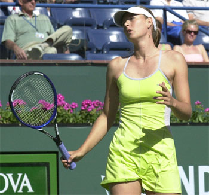
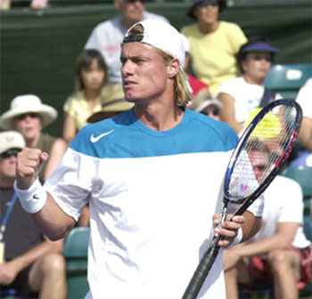

Previous: When Momentum is Totally With You | 🏠 Mental Game Home | Next: Why Can't I Play the Way I Practice?
When Momentum is With You
Comprehensive unified tennis knowledge base — Fundamentals, Stroke Analysis, Reference Library, and more
When Momentum is With You
By Alistair Higham
Turning points cause a shift in the balance of energy between players.
In the last article we looked at the first stage of momentum: when momentum is totally with you. Now let's look at Stage Two, When Momentum Is With You (but not totally with you). (For Part 1 and Part 2 Click Here.)
There are many similarities between the two stages. But potential turning points become more important when momentum is with you, because you have less of a cushion to fall back on. When momentum is totally with you, you have longer to correct your mistakes and your attitude because your opponent has a lot of ground to make up.
Be ready to raise your energy when you spot a potential turning point.
Put the Radar On
When the momentum is with you, you have to spot potential turning points when they occur. If you don't spot a potential turning point and react to it, things could turn against you. You need to have your turning point radar switched on. Like my old doubles partner Mike Robinson once said: "Winning from a winning position is like drowning someone. Every time their head pops up above the water, you push it back down again!" Keeping the radar on is like keeping an eye for their heads popping back up!
Potential turning points always relate to one of three things:
The Actions of Your Opponent
Your Own Actions
External Events
Potential Turning points all have one thing in common: they can cause a change in the balance of the mental energy between the players. This change in mental energy then causes a change in the momentum flow of the match. When you spot a potential turning point, you need to be ready to raise your intensity and effort. This is because potential turning points need not turn into actual turning points.
Turning Point or Blip?
Will a potential Turning Point become the moment when everything turns around and your opponent takes control? Or it will it be merely a Blip -- a difficult moment before the momentum continues to go with you?

A Turning Point or a Blip? Your reaction can determine it.
I began to understand the difference between a Turning Point and a Blip because of two experiences:
1. Watching unseeded players at Wimbledon some years ago, I saw several examples of players having match points, missing the opportunity and then crashing to heavy defeat in the final set. Yet I would see the top players double-fault when serving for the match and then still go on to win the tie-break. Why didn't they also crash to defeat in the final set?
2. Watching inexperienced and experienced players on clay, I noticed that if the inexperienced players missed an opportunity they seemed to panic. The clay-court specialists, on the other hand, accepted missed opportunities and didn't panic. They were prepared to stay on court for three hours if necessary and did not have a crash mentality.
Spectators can sense how negative reactions lead turning points.
Controlling Potential Turning Points
When potential turning points occur, it's as if the momentum suddenly becomes neutral. If a player reacts negatively during that time, you can sense the momentum beginning to turn. Even non-tennis playing spectators can sense this feeling - they can relate to seeing something going wrong and the implications of this. They sense it is the player's response immediately after a potential turning point that determines how big an affect it will have on the match. Potential turning points are always things that are able to depress or boost either you or your opponent. When you have the lead, they usually take the form of distractions to you and/or positive changes by your opponent.
Body Language is a key factor in controlling potential turning point
John McEnroe is an example of a player who often benefited from this double change in energy. He brought about match flow changes by having arguments with the umpire. These incidents usually ended up with him feeling fired up mentally, and his opponent going cold physically and being distracted mentally by the long interruption. He continued the tactic with success even in his career in senior tennis.
The real dynamite for changing momentum is when both distractions to you and positive changes to your opponent happen together and feed off each other. It is your job never to let them happen together when you have the lead. There are a number of key factors that will determine your ability to control turning points.
If your opponent raises their energy, you have to respond in kind.
Attitude and Fighting Spirit
You may not be able to control your opponent's attitude, but you can control yours. If a turning point has just happened against you and your opponent suddenly raises their energy/game because they feel good, you have to be prepared to quickly raise your energy/game too, so your opponent doesn't get the momentum. It's like being in a foot race and your opponent decides to kick -- you have to respond. If you do this well, then your opponent may lose heart if his best attempt to catch you up has failed.
This is how real fighting spirit is born. If you learn to react to disappointing events (i.e. potential turning points) with the atypical reaction of not letting them get you down, then you will at least be lessening the potential swing to your opponent. Part of getting this attitude right happens before you go onto court. Think for a minute about how many perfect matches you have played. Most of the players I know have played hundreds of matches but can recall few if any perfect matches.

With the right attitude you can turn around potential turning points.
The one thing we can probably say about your next match is that at some stage, something will go wrong. Because this is just part of the reality of competitive tennis, you can't be surprised. You have to prepare your mind when the (nearly) inevitable happens. Make sure you are psyched up for any potential turning points against you so that you are ready to respond positively.
With the right attitude you can turn around potential turning points. You can transform something against you into something that is in your favor. A break point is a good example. You may have had something go wrong to have break point against you. But if you win it and go on to win the game, it actually creates more momentum for you than just winning a game in a straightforward manner.
Tim Henman has a very good attitude about this. He recovers mentally very quickly after missing a shot to give his opponent break point. Many times, he digs himself back out again with service winners or brilliant play. This can work in his favour, even if it doesn't do much for the nerves of his supporters!
You can double the boost to your opponent by showing them you are downcast.
Body Language
Even if you can't control your energy, you need to at least control how it looks to your opponent. If they get a boost from what's happening in the match (e.g. a big winner, a double fault, an unexpected missed smash), you don't want to double this boost by letting them see you are downcast by it.
It is vital to remember that a potential turning point will end up as either an actual Turning Point or merely a Blip depending on your response. It's not what goes wrong, but your response to what goes wrong that matters. You have to be mentally prepared to renew your efforts if you slip up when in the lead. Remember that fighting spirit is not only needed when you are behind.
Collecting Points
When momentum is with you, you should keep the match rolling. Try to collect as many points as possible. Statistics show that the player who wins the most total points will win the match, with very few exceptions. Momentum may shift in time. But during the time it is with you, stay focussed and collect as many points as possible to add to your overall tally. Do not relax and think that you can afford to lose a few sloppy points because things are going your way. Ever hear the expression make hay while the sun shines?
When you have momentum, collect as many points as possible.
Dealing with Gamesmanship
Players who have the momentum against them and feel they are running out of time sometimes use gamesmanship. This is because players who are losing get more desperate. It is basically an attempt to cause a distraction, so you lose your focus. It often works because you tend to relax a bit when things are going for you and can get distracted more easily.
Understanding what these players are trying to do can help you keep your focus. Gamesmanship is all about distraction. It usually involves, at best, bending the rules and, at worst, cheating. This can cause feelings of unfairness that can divert some of your mental energy from the game itself.
Even in his senior career, Mac could change the flow of momentum by arguing with officials.
Players who resort to gamesmanship usually pretend to be ignorant of the problem they are causing while knowing there are no rules that can deal with it effectively. This adds to the feeling of unfairness and increases your distraction.
Choosing the Battlefield
Matches can be won or lost either on the tennis or gamesmanship. It's like having two battlefields on which two different battles are fought. On one battlefield there is the tennis game; on the other battlefield is the gamesmanship game.
If your opponent can't win on the tennis battlefield, they might try to entice you onto the gamesmanship battlefield, particularly on a big point. Do not be tempted to go there. Winning battles is a lot to do with who gets to choose the battlefield. If your opponent is trying gamesmanship, they have probably found it to work before and have been practising on that battlefield for a long time. It is their home ground. Therefore, stay on your winning battlefield -- the tennis battlefield.
In other words, if it's a questionable line call, don't get involved in arguing if you are in the lead and you know it will distract you. Make your point strongly and keep the match about tennis by refocusing solely on the game itself.
Beware! There are many forms of gamesmanship including:
Toilet Breaks
These can give your opponent time to recover and let you go off the boil, either by allowing time for you to be distracted mentally or by ensuring you go cold physically. Be sure to keep warm, use the time to review which tactics are working and be ready for your opponent to renew their efforts when they come back.
Bad Line Calls
Arguing calls can inadvertently cause you to lose momentum.
If you do not have an umpire, and you receive a bad line call, it is very easy to be distracted. Here is an example of how you can react positively to a bad line call. Walk to the net and calmly but strongly ask your opponent if they are sure it was out. If they say yes, ask how far out it was. Say you thought it was in and ask if they are prepared to play the point again. If they are not, continue with the game and put your focus into concentrating on the tennis. This is crucial because you do not want long interruptions when you have the momentum.
If you do have an umpire, you can also query the call but then continue soon after for the same reason. Because of the time it takes, it is not worth getting the referee to come to the court when you have the momentum with you, because the end result is almost certainly that the wind will go out of your sails.
Biased Clapping
When you make a mistake, you naturally feel down. When your opponent's supporters clap for your mistake they hope to make you feel worse, to the point of distracting you from the game. Remember this, and don't fall into the trap of glaring at them or appealing to their sense of fairness; you may as well appeal to the sun not to shine in your eyes on a smash! Stay focussed on the tennis.
Keep the match running when you have the momentum.
Keeping the Match Running
When you have the momentum with you, don't create distractions against yourself. Keep the match running. When things are going your way, the quicker the match finishes the better, so don't slow it down. Some players, such as Andre Agassi, speed up when they have the flow with them - this gives their opponent less chance to regroup mentally. Don't interrupt the match by arguing a line call too long, taking a toilet break or taking too long between points. Avoid interruptions when you have the momentum.
In one match I watched, one of the players I coached was leading 6-2, 3-1 when he decided to retrieve a ball that had been hit three courts away, even though he had two balls with which to serve. His three-minute absence allowed his opponent to regroup and regain some momentum for himself by feeling like it was the start of the match again. This player effectively created a turning point against himself, and he eventually lost in three sets.
You can turn a choke into a Turning Point by letting it affect you mentally.
Make sure you are well prepared. Plan ahead before matches so that you cope with anything that might frustrate you, causing a distraction. Make sure you have with you anything you might need: spare rackets correctly strung, drinks, spare shoelaces, change of shirt etc.
Choking
Choking is perhaps the best-known way for a player to create a turning point against himself. Because choking is perceived as mentally weak, when a player loses a lead through choking, he can be affected mentally for the rest of the match. Choking when you are in the lead usually causes their self-esteem to plummet. However, if you are a tennis expert you should know how tough it can be on occasions to close out a win. It is only the non-experts who believe that losing a lead is a sign of weakness every time.
Be a tennis expert and prepared to fight.
To keep choking in perspective, remember what a tennis expert knows:
There's no point in getting very nervous. If your opponent is any good, they will be fighting harder and playing better at the end of the match, so you must always be prepared to work hard for another five minutes or more. How do you expect to win the last game? Will any opponent who is a good player tamely dump four balls into the bottom of the net for you? Concentrate on your own game rather than rely on errors from your opponent.
Be prepared to work hard; nobody knows where the finish line might be. Even at match point, there is still work to be done. Be a tennis expert and be prepared to fight.

Alistair Higham is the National Manager of Coach Development for the LTA, the governing body for tennis in Great Britain. He is the author of Momentum: The Hidden Force in Tennis. Alistair is a former professional player who continues to compete successfully at the highest levels of English regional tennis. He has developed and coached dozens of top junior players, and traveled extensively on the international junior circuit, where he has had the unique opportunity to make a close study of the hidden force that dictates so much in the outcome of competitive tennis matches.

Momentum: The Hidden Force in Tennis Alistair Higham
Read this important new perspective on momentum and the development of the mental game, by top English coach Alistair Higham. Based on his observation of literally thousands of competitive matches as well as his own professional career, this book will give you the perspective and the tools to create momentum in your own matches and deal with the critical turning points that are the difference between winning and losing.
Click Here to Order!
Source: tennisplayer.net archive — When Momentum is With You .docx (John Yandell teaching library, 2002-2022). Extracted and rendered as HTML for Tennis Future Lab.